Про кухню Південної Кореї
Корейська кухня відома своїми ферментованими продуктами, такими як кімчі (гостра маринована капуста) та різноманітними соусами на основі соєвих бобів. Страви часто поєднують солодкі, кислі та гострі смаки. Популярні страви включають біфбімбап (рис з овочами та м'ясом), булгогі (мариноване м'ясо), супи (як-от куксу) та барбекю (корейське барбекю з яловичини чи свинини). Корейська кухня також славиться своїми закусками (банчхан) та використанням паст на основі перцю і часнику.
Виберіть країну
↑ Вгору

ТокпоккіПопулярна корейська страва, що складається з м'яких рисових паличок, зварених у солодко-гострому соусі на основі чилі, соєвого соусу та цукру. Страва часто доповнюється рибними клецками, овочами або яйцями, і має приємну пряність та насичений смак.
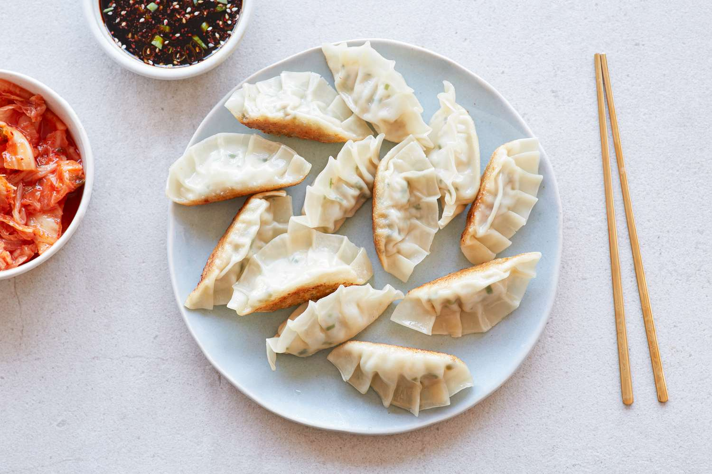
МандуКорейські пельмені, наповнені різними начинками, такими як свинина, яловичина, овочі або тофу. Вони можуть бути вареними, смаженими або на пару, і зазвичай подаються з соєвим соусом або пікантним соусом для занурення.
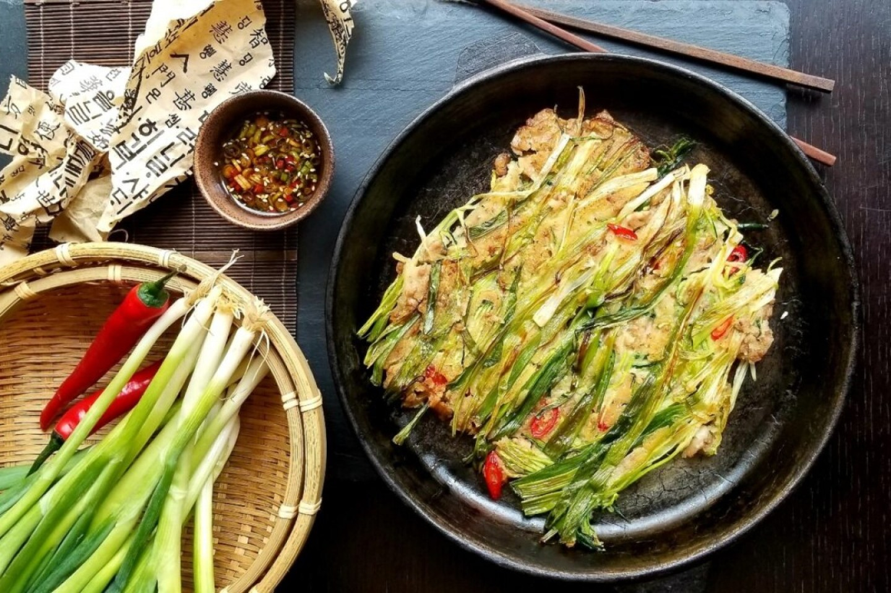
Паджонкорейські млинці, приготовані з борошна, води та зеленої цибулі, іноді з додаванням морепродуктів або м'яса. Млинці смажать до хрусткої скоринки і подають з соєвим соусом для занурення. Паджон є популярною закускою або стравою для святкових подій.
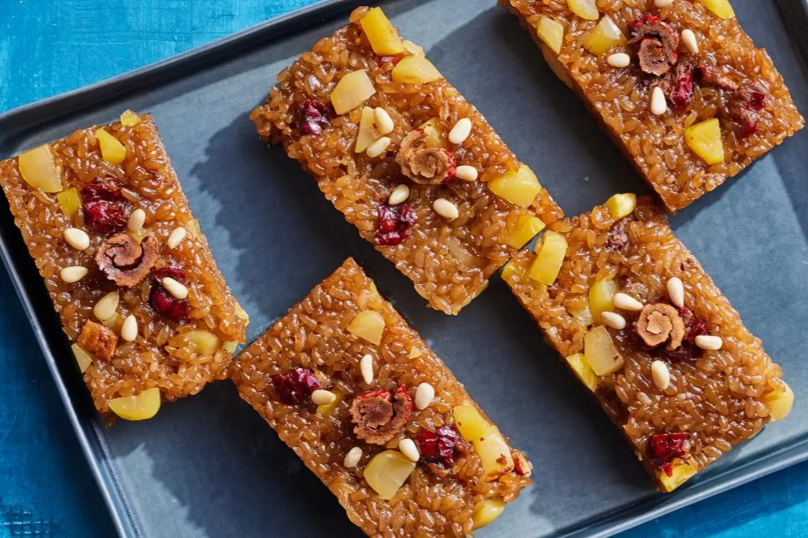
ЯкбапТірадиційний корейський десерт, що складається з рису, звареного в меді та соєвому соусі, з додаванням горіхів, насіння та сухофруктів. Рис має солодку та ніжну текстуру, а поєднання меду та соєвого соусу надає йому унікальний смак.
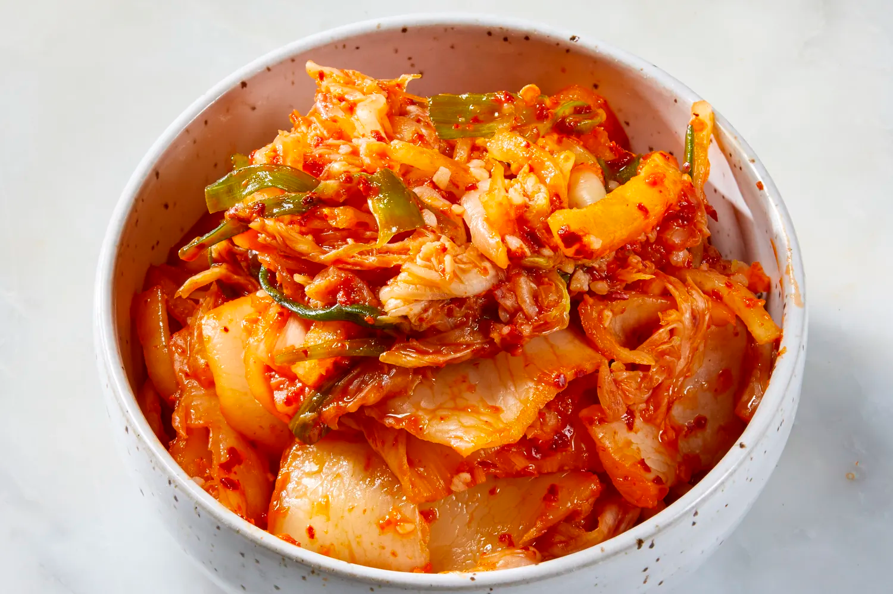
Кімчітрадиційне корейське ферментоване блюдо, зазвичай зроблене з капусти, редьки або іншої овочевої основи, приправленої гострим чилі, часником, імбиром, соєвим соусом та рибним соусом. Кімчі є основною стравою корейської кухні, що подається як гарнір або основний інгредієнт у багатьох стравах.
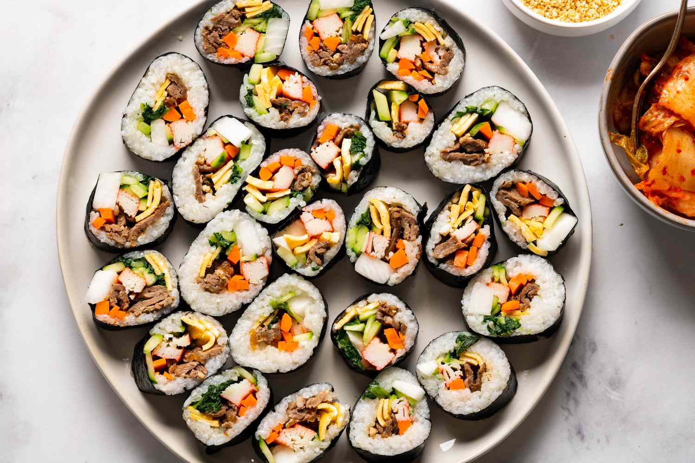
КімбапТрадиційна корейська страва, що складається з рулетів із вареного рису, загорнутого в листи водоростей кім. Начинка може включати овочі, яйця, м'ясо, рибу або тофу, заправлені кунжутною олією та спеціями. Кімбап зазвичай нарізають на шматочки, зручні для їжі.
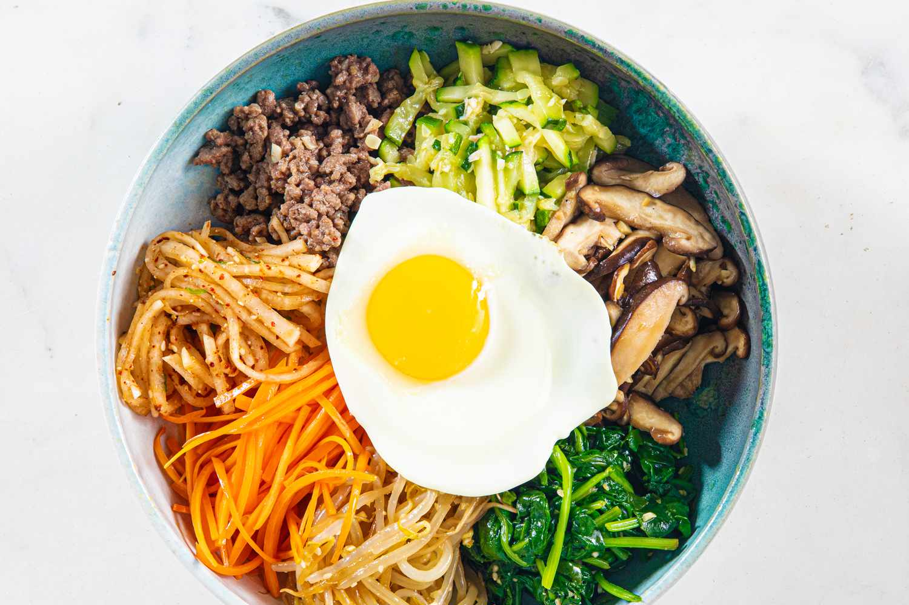
БібімбапСтрава, що складається з вареного рису, покритого різноманітними овочами, м'ясом або тофу, а також смаженим яйцем. Усе це подається з гострим соусом кочуджан і перемішується перед вживанням. Бібімбап є яскравим і збалансованим за смаком, що робить його улюбленою стравою як у Кореї, так і за її межами.
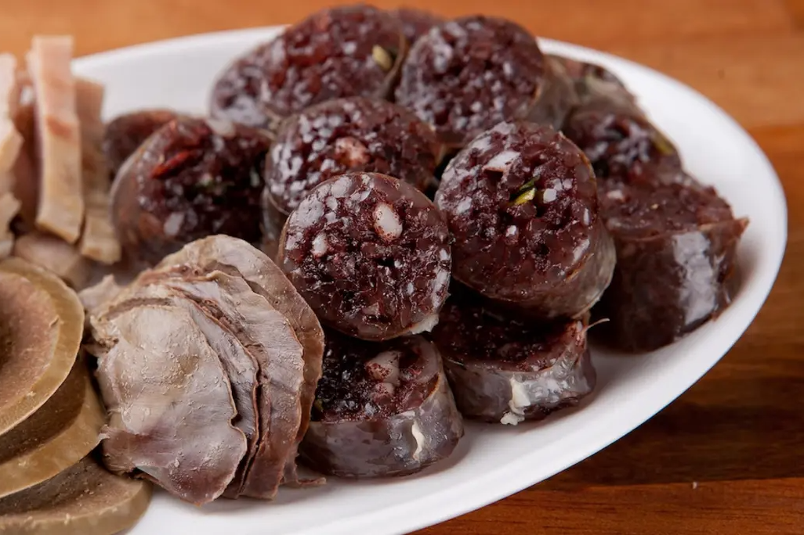
СундеКорейська страва, що складається з варених ковбасок, зроблених із суміші свинячої крові, скляної локшини та спецій, які фарширують у свинячі кишки. Зазвичай подається в якості закуски або вуличної їжі, разом із сіллю, гострим соусом або бульйоном.

ЧапчеТрадиційна корейська страва, приготована з прозорої картопляної локшини (данмьон), обсмаженої з овочами, м'ясом та заправленої соєвим соусом і кунжутною олією. Чапче має легку текстуру, насичений смак і часто подається як гарнір або основна страва на святкових столах.
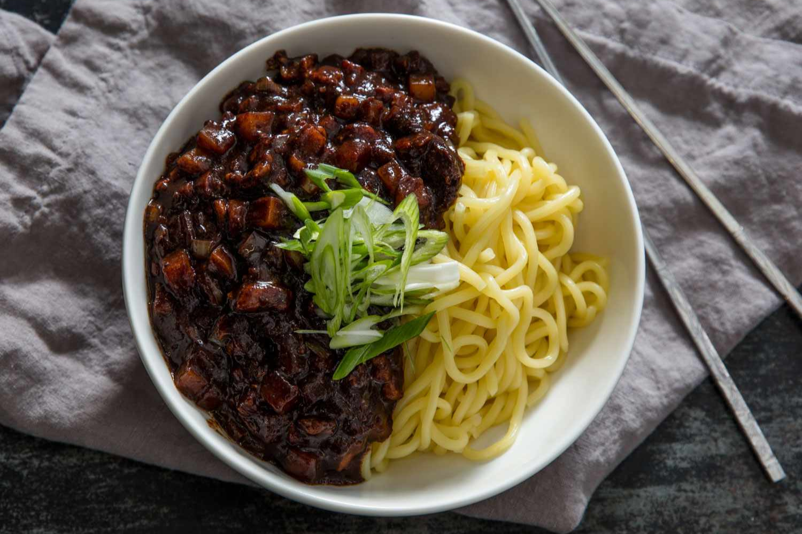
ЧжаджанмьонПопулярна корейська страва з пшеничної локшини, поданої з густим соусом чжаджан на основі чорної соєвої пасти, обсмаженої зі свининою або морепродуктами, а також овочами, такими як цибуля, кабачки й картопля. Це смачна та ситна страва, яка особливо популярна як швидкий і доступний обід.
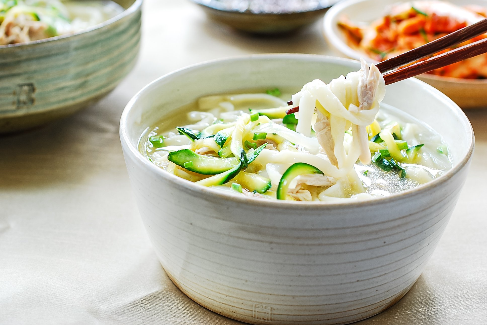
КалькуксуТрадиційний корейський суп із ручної локшини, зварений у насиченому бульйоні на основі м'яса, морепродуктів або овочів. Страва зазвичай доповнюється картоплею, кабачками, морквою й ароматними спеціями, створюючи затишний і заспокійливий смак.
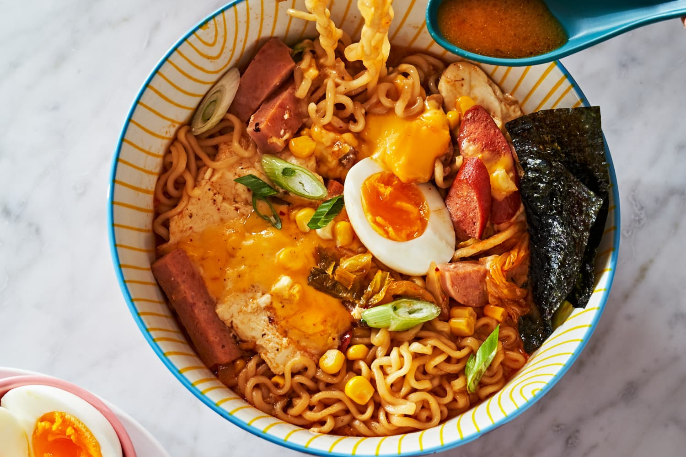
РамьонКорейська версія інстант-локшини, зварена в насиченому бульйоні з додаванням спеціальних приправ. Рамьон часто включає овочі, яйця, м'ясо або морепродукти та подається з різними додатковими інгредієнтами. Це популярна швидка їжа в Кореї, яку люблять за її смак і простоту приготування.

ПулькоґіТрадиційна корейська страва з маринованого м'яса (зазвичай яловичини), яке смажать на грилі або жарять на пательні. М'ясо маринується в соєвому соусі, часнику, цукрі, кунжутній олії та інших спеціях, що надає йому глибокий і солодкувато-гострий смак.

СамґьопсальПопулярна корейська страва, що складається з скибочок свинячого живота, які смажать на грилі прямо на столі. М'ясо загортають у листя салату разом із рисом, соусом самджан і додатковими інгредієнтами, такими як часник чи овочі. Страва має насичений смак і часто супроводжується різноманітними закусками.

Хеджанг-гукТрадиційний корейський "похмільний суп", що готується на основі насиченого бульйону з яловичини, капусти, пророщеної сої, спецій та іноді кров'яної ковбаси. Суп має глибокий, пряний смак і вважається ідеальним засобом для відновлення після святкових застіль.
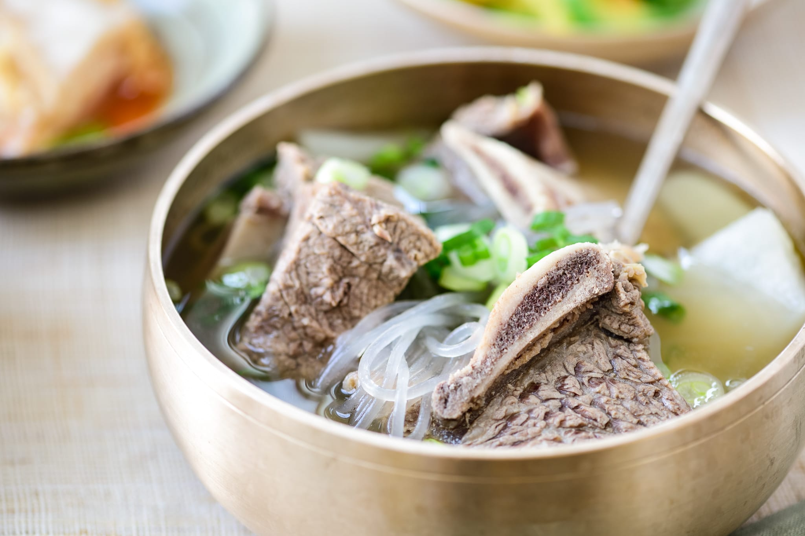
КальбітанКорейський суп, приготований на основі яловичих ребер, що варяться з редькою, часником, цибулею та спеціями. Бульйон виходить насиченим і прозорим, а страва подається гарячою з рисом і кимчі. Кальбітан має ніжний смак і є популярним вибором у холодну пору року.

Пунґо-ппанТрадиційний корейський десерт у формі рибки, зроблений із м'якого тіста і начинений солодкою пастою з червоної квасолі. Іноді додаються інші начинки, такі як крем або шоколад. Цей десерт має хрустку зовнішню скоринку і ніжну, солодку середину, і його часто продають як популярну вуличну їжу.
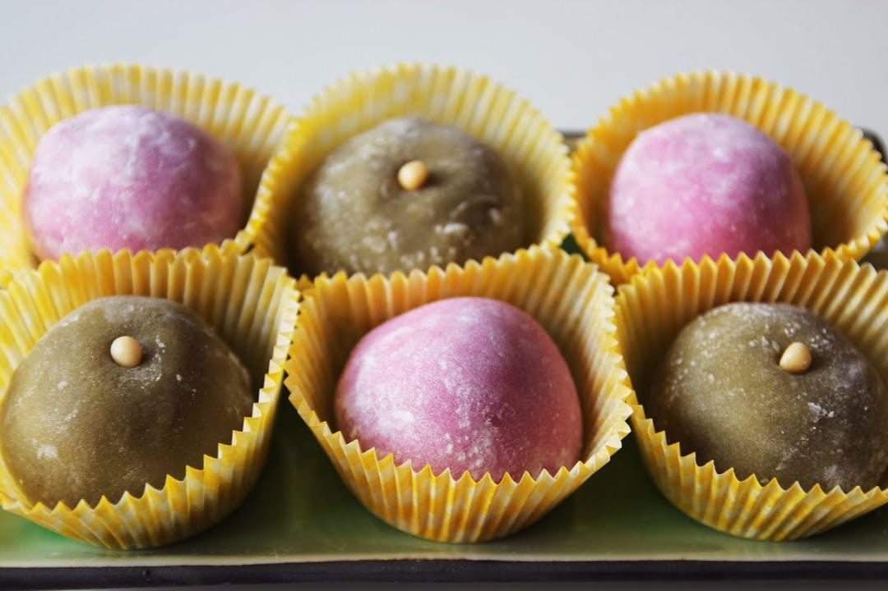
Чапссаль-ттокТрадиційні корейські рисові тістечка, виготовлені з клейкого рисового борошна. Вони мають м’яку, жувальну текстуру і часто наповнені солодкою пастою з червоної квасолі або іншими солодкими начинками. Цей десерт зазвичай подається на святкових заходах і має ніжний, злегка солодкий смак.
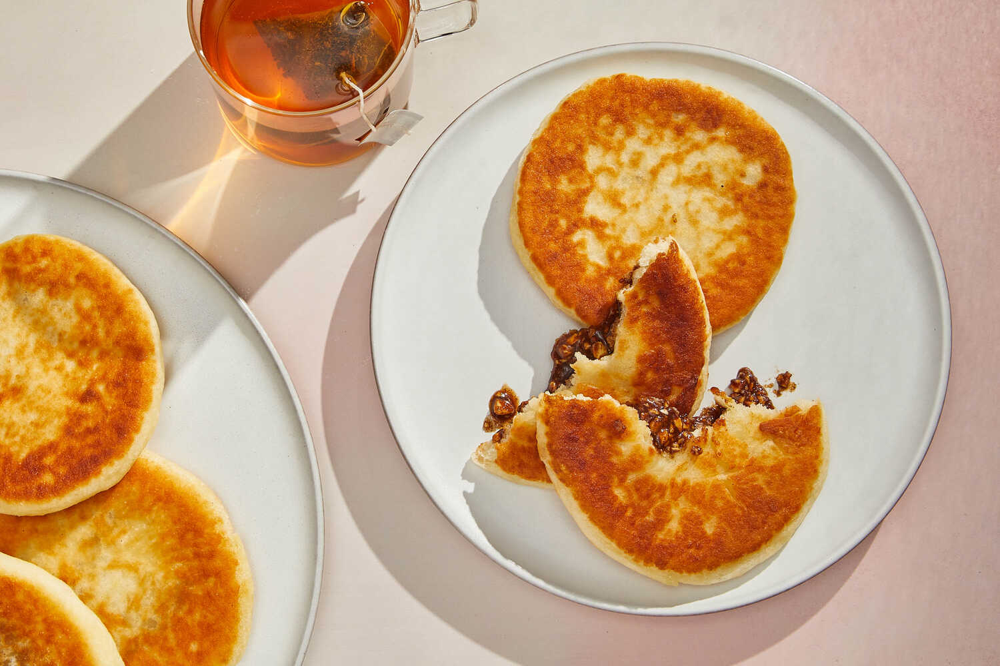
ХоттокКорейський десерт, який представляє собою смажені млинці з дріжджового тіста, начинені сумішшю коричневого цукру, кориці та подрібнених горіхів. Після смаження начинка стає карамелізованою, а млинці набувають хрусткої скоринки зовні та м'якої текстури всередині.

Дальґонатрадиційний корейський десерт, зроблений із карамелізованого цукру та щіпки харчової соди. Після затвердіння солодощам надають плоску форму, часто з витисненими візерунками. Цей десерт має хрустку текстуру та легкий карамельний смак і став популярним завдяки цьому.